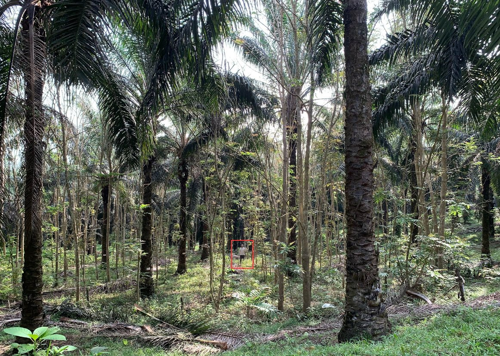

EFForTS-BEE
A TreeDivNet Experiment in Sumatra, Indonesia
February 13, 2025
EFForTS-BEE
Biodiversity enrichment in oil palm plantations: plant succession and integration (EFForTS-BEE)
Status: ongoing
Summary
The transformation of rainforests into oil palm plantations leads to dramatic losses in biodiversity and in ecological functioning. In order to test possibilities for alleviation, we established a biodiversity enrichment experiment by planting tree islands in an oil palm landscape, systematically varying plot size and species number.
Coordination team
PI’s
- Dr. Holger Kreft (University of Göttingen - Germany)
- Dr. Dirk Hölscher (University of Göttingen - Germany)
- Dr. Bambang Irawan (UNJA - Indonesia)
- Dr. Leti Sundawati (IPB - Indonesia)
Scientific coordination
- Gustavo Paterno (University of Göttingen - Germany)
Associated researches
- Dr. Nathaly Guerrero-Ramirez
- Dr. Fabiam Branbach
- Dr. Delphine Clara Zemp
Images

Selected publications
Paterno, G. B., et al. (2024). Diverse and larger tree islands promote native tree diversity in oil palm landscapes. Science, 386(6723), 795–802. link
Zemp, D. C. et al. (2023). Tree islands enhance biodiversity and functioning in oil palm landscapes. Nature, 1–6. link
Kikuchi, T. et al. (2024). Combining planting trees and natural regeneration promotes long-term structural complexity in oil palm landscapes. Forest Ecology and Management, 569, 122182. link
Montoya-Sánchez, et al. (2023). Landscape heterogeneity and soil biota are central to multi-taxa diversity for oil palm landscape restoration. Communications Earth & Environment, 4(1), Article 1. link
- Posted on:
- February 13, 2025
- Length:
- 1 minute read, 212 words
- Categories:
- Tree diversity Tropical Ecology Restoration Ecology
- See Also:
- EFForTS-BEE